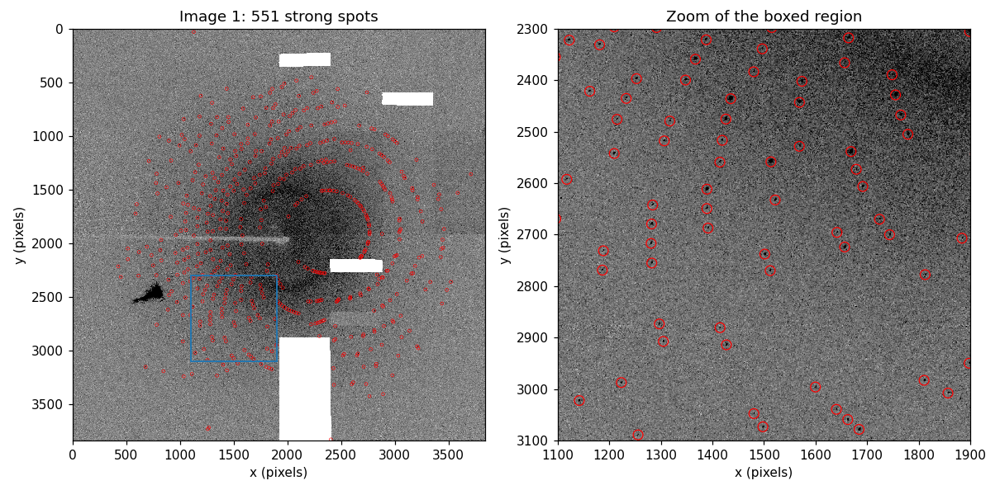
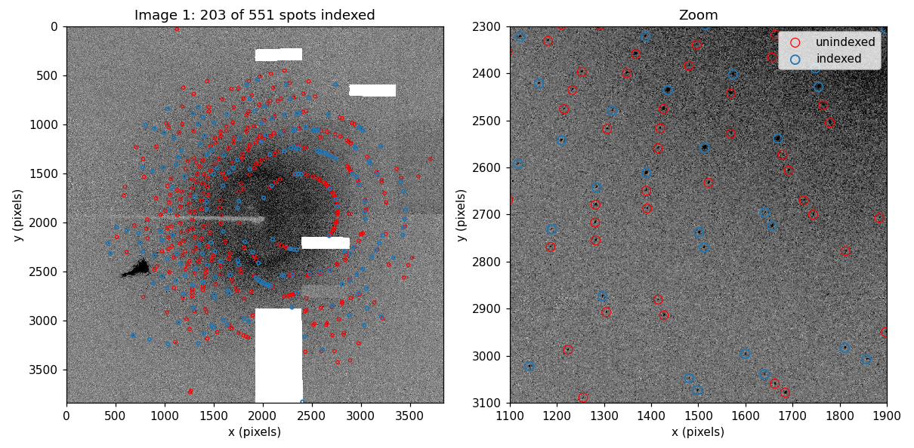
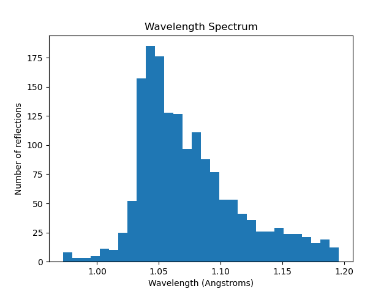
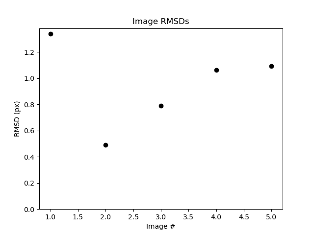
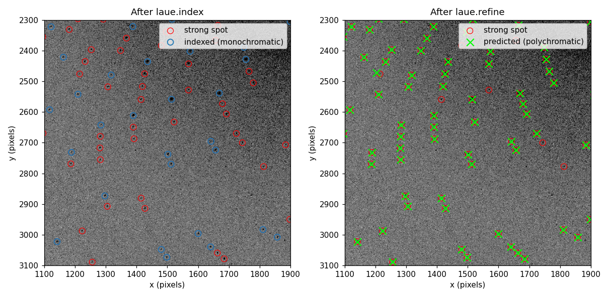
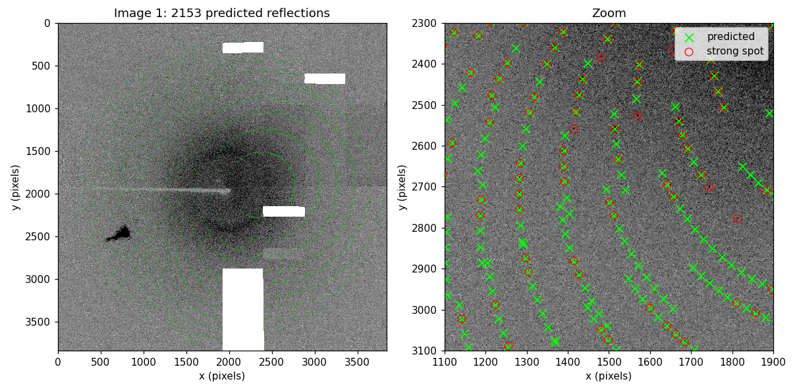
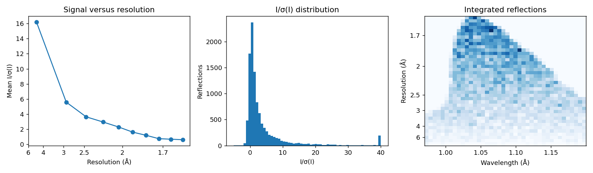

Serial Pink-Beam Laue Processing of DHFR Data
This tutorial walks through processing polychromatic (“pink-beam”)
diffraction images as serial stills with laue-dials. In serial
crystallography every image comes from a different crystal, or from the
same crystal at an unknown orientation, so nothing can be assumed about
how one image relates to the next. Each image is therefore indexed on
its own with the pink-beam indexer built into DIALS (pinkIndexer),
and only then handed to the polychromatic laue-dials pipeline for
wavelength assignment, geometry refinement, prediction, and integration.
The data set is the E. coli dihydrofolate reductase (DHFR) Laue data
set that ships with the laue-dials examples. It was recorded on a
Rayonix MX340-HS detector with a 200 mm crystal-to-detector distance and
a spectrum peaking near 1.04 Å. The images were actually collected as a
rotation series with one degree between frames, but here we deliberately
ignore the goniometer and treat every frame as an independent still.
That makes this data set a convenient stand-in for a true serial
experiment: it exercises exactly the same code path, while still
allowing you to check the results against the rotation-series tutorial
if you wish.
At the end of processing we will have an integrated .mtz file that
can be scaled and merged with
`careless <https://github.com/rs-station/careless>`__.
Installation
The easiest way to install laue-dials and its dependencies is using
Anaconda
(or its lighter-weight cousins Miniforge/Micromamba). First update
conda and install the libmamba solver, which makes environment
creation much faster:
conda update -n base conda
conda install -n base conda-libmamba-solver
conda config --set solver libmamba
Then create and activate an environment for the install:
conda create --name laue-dials
conda activate laue-dials
Now install the main dependency, DIALS,
and then laue-dials itself with pip:
conda install -c conda-forge dials
pip install laue-dials
All other dependencies (including reciprocalspaceship, which writes
the final .mtz file) are installed automatically. Reopen this
notebook with the environment activated when you are ready.
Documentation for laue-dials can be found
here, and
entering any laue.* command with no arguments on the command line
prints a help page. This tutorial was run with DIALS 3.27 and the
development version of laue-dials.
Introduction
The DHFR data set is available on
Zenodo. It contains 179 MCCD
images named e080_001.mccd through e080_179.mccd, plus a
pixels.mask file that blanks out the beamstop shadow and a few dead
regions of the detector.
For this tutorial we process only the first five images. Two reasons:
The pink-beam indexer holds a dense three-dimensional voxel grid in memory while it searches orientation space, and this tutorial was written on a laptop with about 4 GB of RAM. Five images is enough to see every stage of the pipeline while keeping the run time to a few minutes.
In a serial experiment the number of images is limited only by your patience, so the commands below are written to scale: every program takes an
nproc(orN) argument, and nothing in the pipeline depends on the number of images.
Copy (or symlink) the first five images into a directory called data
next to this notebook, and put pixels.mask in the working directory:
data/e080_001.mccd
data/e080_002.mccd
data/e080_003.mccd
data/e080_004.mccd
data/e080_005.mccd
pixels.mask
All of the commands in this tutorial are also collected in
serial_pipeline.sh, which you can run in
one go once you are comfortable with the individual steps.
Importing Data
dials.import reads the images and their headers and writes an
experiment list (imported.expt) describing the beam, detector, and
(for rotation data) goniometer and scan. For MCCD images from this
beamline the header does not contain everything DIALS needs, so we
supply the missing pieces on the command line:
geometry.beam.wavelength=1.04— the peak wavelength of the spectrum. This is a placeholder used by the monochromatic algorithms; the polychromatic steps will assign a wavelength to every reflection individually.geometry.detector.panel.pixel=0.08854,0.08854— the pixel size in mm.geometry.scan.oscillation=0,1andgeometry.goniometer.axes=0,1,0— a nominal scan and rotation axis, needed only so that the format reader is happy. They are discarded in the next line.convert_sequences_to_stills=True— this is the key option for serial data. It tells DIALS to forget the scan and goniometer and to treat every image as an independent still experiment, which is what we want for a serial data set.lookup.mask=pixels.mask— the pixel mask. Applying it at import means it is stored in the experiment list and inherited by every later step.
dials.import geometry.scan.oscillation=0,1 \
geometry.goniometer.axes=0,1,0 \
convert_sequences_to_stills=True \
geometry.beam.wavelength=1.04 \
geometry.detector.panel.pixel=0.08854,0.08854 \
lookup.mask=pixels.mask \
input.template=$(pwd)/data/e080_###.mccd
The import summary at the end of the output should report
num stills: 5 and no sweeps. If you see a sweep instead,
convert_sequences_to_stills did not take effect and the later
stills-specific options will fail.
A quick way to check that the geometry is sensible is dials.show:
dials.show imported.expt | head -n 40
Spot Finding
Spot finding is exactly the same as for rotation data: we look for
connected pixels that rise above the local background on every image. We
call dials.find_spots directly here (laue.find_spots is a thin
wrapper around it and either can be used). The important parameters are:
spotfinder.threshold.dispersion.gain=0.15— the effective detector gain used by the dispersion threshold. Lower values find more (and weaker) spots; too low and you start picking up noise. For this detector 0.15 gives a clean set of strong spots.spotfinder.filter.max_separation=10— the maximum distance in pixels between a spot’s centroid and its brightest pixel. This rejects streaky or overlapping blobs that would confuse indexing.output.shoeboxes=False— do not store the pixel data for every spot in the reflection file. It keepsstrong.reflsmall; the integrator does its own pixel extraction later.lookup.mask=pixels.mask— the mask again, so masked pixels never become spots.
N sets the number of parallel processes. Raise it on a machine with
more cores and memory.
N=1
dials.find_spots imported.expt \
output.shoeboxes=False \
spotfinder.mp.nproc=$N \
spotfinder.threshold.dispersion.gain=0.15 \
spotfinder.filter.max_separation=10 \
lookup.mask=pixels.mask
The log ends with a histogram of spots per image. Each of the five images yields between roughly 550 and 610 strong spots, for 2878 in total, and the counts are consistent from image to image, which is a good sign that the threshold is neither too high nor too low.
Viewing Images
The best way to judge spot finding is to look at the spots on the raw image. DIALS ships an interactive viewer for this:
dials.image_viewer imported.expt strong.refl
Tick “Mark centers of mass” to draw the found spots. If many obvious spots are not marked, lower the gain; if the marks land on noise between the spots, raise it. The viewer also has a tool for drawing new mask regions if you see scatter from the beamstop or a bad panel that you want to exclude.
Because this tutorial is a static notebook we draw the same overlay with matplotlib instead. The helper below is reused throughout the tutorial to show the first image with reflection positions on top of it.
import os
import numpy as np
import matplotlib.pyplot as plt
from dials.array_family import flex
from dxtbx.model.experiment_list import ExperimentListFactory
os.makedirs("tutorial_images", exist_ok=True)
# Load the first image once (raw counts, masked pixels shown white)
expts = ExperimentListFactory.from_json_file("imported.expt", check_format=True)
image = expts[0].imageset.get_raw_data(0)[0].as_numpy_array().astype(float)
image[image < 0] = np.nan
NX, NY = expts[0].detector[0].get_image_size()
VMAX = np.nanpercentile(image, 99.7)
ZOOM = (1100, 1900, 2300, 3100) # x0, x1, y0, y1 of a zoomed-in region
def show_image(ax, zoom=False):
ax.imshow(image, cmap="Greys", vmin=0, vmax=VMAX, interpolation="nearest")
if zoom:
ax.set_xlim(ZOOM[0], ZOOM[1])
ax.set_ylim(ZOOM[3], ZOOM[2])
else:
ax.set_xlim(0, NX)
ax.set_ylim(NY, 0)
ax.set_xlabel("x (pixels)")
ax.set_ylabel("y (pixels)")
def xy(refl, key, sel):
xyz = refl[key].select(sel).as_numpy_array()
return xyz[:, 0], xyz[:, 1]
strong = flex.reflection_table.from_file("strong.refl")
per_image = [(strong["id"] == i).count(True) for i in range(len(expts))]
print("Strong spots per image:", per_image, "total:", len(strong))
sx, sy = xy(strong, "xyzobs.px.value", strong["id"] == 0)
fig, axes = plt.subplots(1, 2, figsize=(11, 5.4))
show_image(axes[0])
axes[0].scatter(sx, sy, s=6, facecolors="none", edgecolors="red", linewidths=0.4)
axes[0].add_patch(plt.Rectangle((ZOOM[0], ZOOM[2]), ZOOM[1] - ZOOM[0], ZOOM[3] - ZOOM[2],
fill=False, edgecolor="tab:blue", lw=1.2))
axes[0].set_title(f"Image 1: {per_image[0]} strong spots")
show_image(axes[1], zoom=True)
axes[1].scatter(sx, sy, s=60, facecolors="none", edgecolors="red", linewidths=0.8)
axes[1].set_title("Zoom of the boxed region")
fig.tight_layout()
fig.savefig("tutorial_images/spotfinding_image.png", dpi=110)
plt.show()
{kind=link}

The spots lie on the curved, streak-like loci typical of Laue diffraction: each streak is a row of reflections from one reciprocal-lattice line, spread out along the streak by the range of wavelengths in the beam. The masked beamstop arm and the dead rectangles show up as white regions with no spots.
Indexing Each Still with pinkIndexer
Indexing is where serial data differ most from rotation data. With a
rotation series laue.index can use the known one-degree steps
between images to index every frame with a single crystal model. In a
serial experiment each image must be indexed on its own, and because the
beam is polychromatic we cannot use the usual monochromatic stills
indexers either: a reflection’s position on the detector no longer
determines its reciprocal-lattice vector until we know its wavelength.
DIALS includes the pinkIndexer algorithm (Gevorkov et al.,
2020) for exactly this
situation. Given the unit cell and an approximate wavelength range, it
searches for the crystal orientation that places the most observed spots
on lattice points for some wavelength inside the bandwidth. It is
selected in laue.index with
indexer.indexing.method=pink_indexer.
laue.index wraps dials.index; every dials.index parameter is
available under the indexer. prefix. The command below is long, so
here is what each group of parameters does:
Pink indexer parameters (indexer.indexing.pink_indexer.*)
wavelength=1.1andpercent_bandwidth=15define the wavelength window the indexer considers: 1.1 Å ± 7.5 %, i.e. roughly 1.02–1.18 Å. The window should cover the bulk of your spectrum. Note that it need not be centred on the placeholder wavelength given todials.import.max_refls=50— index using the 50 strongest spots on each image. More spots make the orientation search slower without much benefit.rotogram_grid_points=180andvoxel_grid_points=250control how finely orientation space is sampled. Finer grids (for example 360 rotogram points) give slightly more precise starting orientations but need proportionally more memory: 360 points needs over 2.5 GB per process on this data set, which is why the DIALS default of 180 is used in this tutorial.min_lattices=5— ask the indexer to generate several candidate lattices rather than stopping at the first, so the stills indexer has alternatives to choose between. In recent DIALS versions this option is deprecated in favour oftarget_lattices, which works the same way.
Known symmetry (indexer.indexing.known_symmetry.*)
The space group (19, P2₁2₁2₁) and unit cell of DHFR. pinkIndexer requires a unit cell; it cannot determine one ab initio. If your cell is only approximately known, increase
percent_bandwidth, which also absorbs uncertainty in the cell lengths.
Stills indexing parameters (indexer.indexing.stills.* and
friends)
refinement_protocol.mode=None— do not refine the crystal model insidedials.index. Monochromatic refinement of polychromatic data would pull the model towards a compromise wavelength; we leave refinement to the polychromatic steps below.stills.refine_all_candidates=True,stills.rmsd_min_px=20, andstills.ewald_proximal_volume_max=0.03— every candidate lattice is scored with a quick stills refinement and the best one is kept. The thresholds are generous because, under the single-wavelength assumption, most reflections will not sit exactly on the Ewald sphere.joint_indexing=False— index every image independently. This is what makes the run “serial”: no information is shared between images.refinement.reflections.outlier.algorithm=None,parameterisation.auto_reduction.action=fix, andparameterisation.scan_varying=False— settings for the candidate refinement that avoid rejecting reflections or failing on stills with few spots.
Output
laue_output.index_only=True— skip the scan-varying refinement thatlaue.indexnormally runs after indexing. That refinement is meaningful only for rotation data. The indexed stills are written directly tomonochromatic.exptandmonochromatic.refl.
N=1
laue.index imported.expt strong.refl \
indexer.indexing.nproc=$N \
indexer.indexing.method="pink_indexer" \
indexer.indexing.pink_indexer.wavelength=1.1 \
indexer.indexing.pink_indexer.percent_bandwidth=15 \
indexer.indexing.pink_indexer.max_refls=50 \
indexer.indexing.pink_indexer.min_lattices=5 \
indexer.indexing.pink_indexer.rotogram_grid_points=180 \
indexer.indexing.pink_indexer.voxel_grid_points=250 \
indexer.indexing.known_symmetry.space_group=19 \
indexer.indexing.known_symmetry.unit_cell=34.297,45.552,99.035,90,90,90 \
indexer.indexing.refinement_protocol.mode=None \
indexer.indexing.stills.ewald_proximal_volume_max=0.03 \
indexer.indexing.stills.rmsd_min_px=20 \
indexer.indexing.stills.refine_all_candidates=True \
indexer.indexing.joint_indexing=False \
indexer.refinement.reflections.outlier.algorithm=None \
indexer.refinement.parameterisation.auto_reduction.action=fix \
indexer.refinement.parameterisation.scan_varying=False \
laue_output.index_only=True
The log is long because the stills indexer reports a refinement for
every candidate lattice on every image. Look for the
Indexing imageset id banners to follow progress from image to image,
and for n_indexed in the summary after each one. On this laptop each
image takes about ten seconds to index.
Let us look at what came out. monochromatic.expt now contains five
crystal models, one per image, and monochromatic.refl has the strong
spots with Miller indices assigned where the indexer could do so.
import pandas as pd
mono_expts = ExperimentListFactory.from_json_file("monochromatic.expt", check_format=False)
mono = flex.reflection_table.from_file("monochromatic.refl")
rows = []
for i, e in enumerate(mono_expts):
a, b, c, al, be, ga = e.crystal.get_unit_cell().parameters()
n_idx = (mono["id"] == i).count(True)
rows.append({"image": i + 1, "a": round(a, 2), "b": round(b, 2), "c": round(c, 2),
"strong": per_image[i], "indexed": n_idx,
"fraction": round(n_idx / per_image[i], 2)})
pd.DataFrame(rows).set_index("image")
image |
a (Å) |
b (Å) |
c (Å) |
strong |
indexed |
fraction |
|---|---|---|---|---|---|---|
1 |
34.21 |
45.51 |
98.96 |
551 |
203 |
0.37 |
2 |
34.21 |
44.79 |
99.12 |
550 |
212 |
0.39 |
3 |
34.23 |
45.17 |
98.93 |
589 |
238 |
0.40 |
4 |
34.30 |
45.09 |
98.99 |
612 |
224 |
0.37 |
5 |
34.23 |
44.73 |
99.13 |
576 |
232 |
0.40 |
Two things stand out, and both are expected:
Only about 40 % of the strong spots are indexed. The stills indexer still assigns Miller indices using a single wavelength (1.04 Å), and only reflections whose true wavelength happens to be close to it satisfy the Ewald condition within the tolerance. The remaining spots are real, and
laue.optimize_indexingwill recover them in the next section.The unit cells are slightly off. Cell lengths from a monochromatic treatment of pink-beam data scale with the assumed wavelength, so
bin particular wanders between 44.7 and 45.5 Å. This does not matter here: the orientation is what we need from this step, and the cell will be reset and refined later.
The plot below shows the first image again, this time marking which strong spots were indexed. Notice how the indexed spots (blue) cluster at particular positions along each streak—those are the reflections whose wavelength is near 1.04 Å—while their neighbours along the same streak are left unindexed.
sel_idx = mono["id"] == 0
sel_un = (mono["id"] == -1) & (mono["imageset_id"] == 0)
ix, iy = xy(mono, "xyzobs.px.value", sel_idx)
ux, uy = xy(mono, "xyzobs.px.value", sel_un)
fig, axes = plt.subplots(1, 2, figsize=(11, 5.4))
for ax, zoom in zip(axes, (False, True)):
show_image(ax, zoom=zoom)
s = 60 if zoom else 8
ax.scatter(ux, uy, s=s, facecolors="none", edgecolors="red", linewidths=0.8, label="unindexed")
ax.scatter(ix, iy, s=s, facecolors="none", edgecolors="tab:blue", linewidths=1.2, label="indexed")
axes[0].set_title(f"Image 1: {sel_idx.count(True)} of {per_image[0]} spots indexed")
axes[1].set_title("Zoom")
axes[1].legend(loc="upper right")
fig.tight_layout()
fig.savefig("tutorial_images/mono_indexing.png", dpi=110)
plt.show()
{kind=link}

If indexing fails on some images (the log will say so and those images
are dropped from monochromatic.expt), the usual remedies are:
widen
percent_bandwidthso the wavelength window covers more of the spectrum;raise
max_reflsif the image has few strong spots, or lower the spot-finding gain to find more of them;check with
dials.image_viewerthat the beam centre and detector distance are right, since pinkIndexer is sensitive to both.
Note: with rotation data you would now run
laue.sequence_to_stills to split the scan into stills. Serial data
are already stills, so that step is not needed here.
Polychromatic Analysis
From here on the pipeline is the same as for rotation Laue data. Four
programs in laue-dials turn the monochromatic starting point into a
polychromatic model of each image:
laue.optimize_indexingassigns a wavelength to every reflection and refines the crystal orientation jointly, re-indexing the spots that the monochromatic step could not.laue.refineis a polychromatic wrapper fordials.refinethat refines the full experimental geometry against the wavelength-assigned reflections.laue.predictuses the refined geometry to predict the position and wavelength of every reflection that can appear on the detector, strong or weak.laue.integratefits spot profiles at the predicted positions and writes the integrated intensities to an.mtzfile.
Optimizing the Indexing Solution
laue.optimize_indexing takes the wavelength limits of the spectrum
(lam_min, lam_max) and a resolution limit (d_min) and, for
each image, alternates between assigning each spot the Miller index and
wavelength that best explain its position and rotating the crystal to
reduce the residuals. Serial-specific choices in this command:
geometry.unit_cell=...resets every crystal to the known DHFR cell before optimization. This removes the wavelength-dependent cell scaling we saw in the previous section. For rotation data one would usually let the cell fromlaue.indexstand.n_macrocycles=5— the number of assign/rotate cycles. Serial stills start from a rougher orientation than a scan-refined rotation series, so a couple of extra cycles (the default is 3) help them converge.keep_unindexed=Falseandfilter_spectrum=True— drop reflections that still cannot be indexed, or whose assigned wavelength falls outside the stated spectrum, so they do not bias geometry refinement.
N=1
laue.optimize_indexing monochromatic.expt monochromatic.refl \
output.experiments="optimized.expt" \
output.reflections="optimized.refl" \
output.log="laue.optimize_indexing.log" \
wavelengths.lam_min=0.97 \
wavelengths.lam_max=1.20 \
reciprocal_grid.d_min=1.4 \
geometry.unit_cell=34.297,45.552,99.035,90,90,90 \
n_macrocycles=5 \
keep_unindexed=False \
filter_spectrum=True \
nproc=$N
opt = flex.reflection_table.from_file("optimized.refl")
opt_per_image = [(opt["id"] == i).count(True) for i in range(len(expts))]
print("Indexed after optimization:", opt_per_image, "total:", len(opt))
print("Fraction of strong spots indexed: %.2f" % (len(opt) / len(strong)))
wl = opt["wavelength"].as_numpy_array()
print("Assigned wavelength range: %.3f - %.3f Angstrom" % (wl.min(), wl.max()))
Wavelength assignment roughly doubles the number of indexed reflections, from about 1100 to 2175 of the 2878 strong spots (76 %) in this run:
image |
1 |
2 |
3 |
4 |
5 |
|---|---|---|---|---|---|
indexed (monochromatic) |
203 |
212 |
238 |
224 |
232 |
indexed (optimized) |
380 |
433 |
536 |
416 |
410 |
(The exact counts can differ by a few percent from run to run, because the orientation optimization is iterative and starts from slightly different candidate solutions.)
The reflections that remain unindexed are mostly at the ends of the streaks, where the wavelength is outside the 0.97–1.20 Å window, or are harmonics and overlaps that no single Miller index can explain.
Refining the Geometry
laue.refine runs dials.refine with one beam per reflection, so
that the detector position, crystal orientation, and unit cell are
refined against the polychromatic observations. As with dials.refine
it detects and rejects centroid outliers before the final cycle; expect
to see a few percent of reflections flagged on each image.
N=1
laue.refine optimized.expt optimized.refl \
output.experiments="poly_refined.expt" \
output.reflections="poly_refined.refl" \
output.log="laue.poly_refined.log" \
nproc=$N
Checking the Wavelength Spectrum
laue.plot_wavelengths histograms the wavelengths that were assigned
to the refined reflections. It should look like the spectrum of the
beam: for this undulator source a sharp peak near 1.04 Å with a long
tail to longer wavelengths. If the histogram is flat, or piles up at the
lam_min/lam_max limits, the wavelength assignment has gone wrong
and it is worth revisiting the indexing before going further.
laue.plot_wavelengths poly_refined.refl \
refined_only=True \
save=True \
show=False \
output=tutorial_images/wavelengths.png
{kind=link}

Checking the Residuals
laue.compute_rmsds reports, for each image, the root-mean-square
distance between observed and predicted spot centroids. After
polychromatic refinement these should be around a pixel. An image with a
much larger RMSD than its neighbours has probably been mis-indexed and
can be dropped before prediction.
laue.compute_rmsds poly_refined.expt poly_refined.refl \
show=False \
save=True \
output=tutorial_images/residuals.png \
csv=rmsds.csv
cat rmsds.csv
{kind=link}

image |
1 |
2 |
3 |
4 |
5 |
|---|---|---|---|---|---|
RMSD (px) |
1.34 |
0.49 |
0.79 |
1.06 |
1.09 |
reflections |
380 |
433 |
536 |
416 |
410 |
All five images refine to an RMSD of about one pixel or better, and the refined unit cells now agree with each other to within 0.01 Å (a ≈ 34.30, b ≈ 45.53, c ≈ 98.83 Å).
One caveat is worth knowing about. laue.optimize_indexing protects
the orientation refinement with a robust outlier filter (a minimum
covariance determinant estimate on the observed and predicted scattering
vectors), and reflections it rejects are written out unindexed and
therefore dropped by keep_unindexed=False. On a still whose
residuals vary systematically across the detector—here the upper quarter
of images 1, 4 and 5 has residuals roughly twice those elsewhere—the
filter can reject that whole region. Those reflections take no part in
laue.refine, but they are not lost: the refined geometry still
predicts them, and they are integrated along with everything else in the
next two sections. If you see this on many images it is a hint that the
detector model (distance, tilt, or beam centre) deserves a closer look.
Let us compare the predicted spot positions before and after the polychromatic treatment:
poly_expts = ExperimentListFactory.from_json_file("poly_refined.expt", check_format=False)
poly = flex.reflection_table.from_file("poly_refined.refl")
for i, e in enumerate(poly_expts):
print("image %d cell: %s" % (i + 1, " ".join("%.3f" % v for v in e.crystal.get_unit_cell().parameters())))
px, py_ = xy(poly, "xyzcal.px", poly["id"] == 0)
fig, axes = plt.subplots(1, 2, figsize=(11, 5.4))
show_image(axes[0], zoom=True)
axes[0].scatter(sx, sy, s=60, facecolors="none", edgecolors="red", linewidths=0.8, label="strong spot")
axes[0].scatter(ix, iy, s=60, facecolors="none", edgecolors="tab:blue", linewidths=1.2, label="indexed (monochromatic)")
axes[0].legend(loc="upper right")
axes[0].set_title("After laue.index")
show_image(axes[1], zoom=True)
axes[1].scatter(sx, sy, s=60, facecolors="none", edgecolors="red", linewidths=0.8, label="strong spot")
axes[1].scatter(px, py_, s=90, marker="x", color="lime", linewidths=1.4, label="predicted (polychromatic)")
axes[1].legend(loc="upper right")
axes[1].set_title("After laue.refine")
fig.tight_layout()
fig.savefig("tutorial_images/mono_vs_poly.png", dpi=110)
plt.show()
{kind=link}

On the left only a fraction of the spots along each streak carried a Miller index after monochromatic indexing. On the right the polychromatic model places a prediction (green cross) on essentially every strong spot, and the crosses that fall on the streaks between the strong spots are the weak reflections that were not picked up by spot finding.
You can also use dials.report poly_refined.expt poly_refined.refl to
generate an HTML report with many more diagnostic plots.
Spot Prediction
With a refined geometry we can predict where every reflection allowed by
the spectrum and the resolution limit should fall on the detector, not
just the strong ones that spot finding picked out. laue.predict
takes the same wavelength and resolution limits as
laue.optimize_indexing. If the wavelength histogram above turned out
to be narrower than the limits you gave earlier, you can tighten
lam_min/lam_max here to avoid predicting spots at wavelengths
where there is no beam.
The predictor also estimates how likely each prediction is to be observable and removes improbable ones, and discards predictions that fall on masked pixels.
N=1
laue.predict poly_refined.expt poly_refined.refl \
output.reflections="predicted.refl" \
output.log="laue.predict.log" \
wavelengths.lam_min=0.97 \
wavelengths.lam_max=1.20 \
reciprocal_grid.d_min=1.4 \
nproc=$N
pred = flex.reflection_table.from_file("predicted.refl")
pred_per_image = [(pred["id"] == i).count(True) for i in range(len(expts))]
print("Predicted reflections per image:", pred_per_image, "total:", len(pred))
qx, qy = xy(pred, "xyzcal.px", pred["id"] == 0)
fig, axes = plt.subplots(1, 2, figsize=(11, 5.4))
show_image(axes[0])
axes[0].scatter(qx, qy, s=1.5, color="tab:green", linewidths=0)
axes[0].set_title(f"Image 1: {pred_per_image[0]} predicted reflections")
show_image(axes[1], zoom=True)
axes[1].scatter(qx, qy, s=70, marker="x", color="lime", linewidths=1.2, label="predicted")
axes[1].scatter(sx, sy, s=60, facecolors="none", edgecolors="red", linewidths=0.8, label="strong spot")
axes[1].legend(loc="upper right")
axes[1].set_title("Zoom")
fig.tight_layout()
fig.savefig("tutorial_images/predicted_overlay.png", dpi=110)
plt.show()
{kind=link}

About 2150 reflections are predicted per image, roughly four times the number of strong spots. In the zoomed panel every strong spot has a prediction on it, and the predictions in between mark the weak reflections that the integrator will measure as well.
Integration
laue.integrate measures an intensity for every predicted reflection.
For each image it chooses an integration radius from the spacing of the
predicted centroids (10–12 pixels here), pools the pixels of the nearest
strong spots to learn an elliptical profile, and then fits that profile
plus a flat background to the pixels around each prediction. Weak
reflections thus inherit a well-determined profile from their neighbours
instead of fitting noise. The result is written straight to an .mtz
file.
N=1
laue.integrate poly_refined.expt predicted.refl \
output.filename="integrated.mtz" \
output.log="laue.integrate.log" \
nproc=$N
The .mtz is unmerged and contains one record per integrated
reflection. We can inspect it with reciprocalspaceship:
import reciprocalspaceship as rs
ds = rs.read_mtz("integrated.mtz")
print(ds.spacegroup.short_name(), ds.cell)
print("Columns:", list(ds.columns))
print("Reflections:", len(ds))
print(ds["BATCH"].value_counts().sort_index().rename("per image"))
ds.head()
The columns are:
column |
meaning |
|---|---|
|
Miller indices |
|
the image number (1–5), used by
|
|
integrated intensity and its uncertainty |
|
predicted detector position in pixels |
|
assigned wavelength in Å |
|
fitted background under the spot and its uncertainty |
|
partiality flag unpacked from the
MTZ |
A quick look at the data quality:
ds = ds.compute_dHKL()
d = ds["dHKL"].to_numpy(dtype=float)
isigi = (ds["I"] / ds["SIGI"]).to_numpy(dtype=float)
w = ds["wavelength"].to_numpy(dtype=float)
print("Resolution range: %.2f - %.2f Angstrom" % (d.max(), d.min()))
print("Mean I/sigma(I): %.2f; fraction with I/sigma(I) > 2: %.2f" % (isigi.mean(), (isigi > 2).mean()))
# Resolution bins with equal volume in reciprocal space
edges = np.linspace(1 / 6.0**3, 1 / d.min() ** 3, 11) ** (-1 / 3)
mids, means = [], []
for hi, lo in zip(edges[:-1], edges[1:]):
sel = (d <= hi) & (d > lo)
mids.append(0.5 * (hi + lo))
means.append(isigi[sel].mean())
fig, axes = plt.subplots(1, 3, figsize=(13, 3.8))
axes[0].plot(1 / np.array(mids) ** 2, means, "o-")
ticks = [6, 4, 3, 2.5, 2, 1.7]
axes[0].set_xticks([1 / t**2 for t in ticks], [str(t) for t in ticks])
axes[0].set_xlabel("Resolution (Å)")
axes[0].set_ylabel("Mean I/σ(I)")
axes[0].set_title("Signal versus resolution")
axes[1].hist(np.clip(isigi, -5, 40), bins=60)
axes[1].set_xlabel("I/σ(I)")
axes[1].set_ylabel("Reflections")
axes[1].set_title("I/σ(I) distribution")
axes[2].hist2d(w, 1 / d**2, bins=[40, 40], cmap="Blues")
axes[2].set_yticks([1 / t**2 for t in ticks], [str(t) for t in ticks])
axes[2].set_xlabel("Wavelength (Å)")
axes[2].set_ylabel("Resolution (Å)")
axes[2].set_title("Integrated reflections")
fig.tight_layout()
fig.savefig("tutorial_images/integrated_stats.png", dpi=130)
plt.show()
{kind=link}

The mean I/σ(I) falls smoothly with resolution and drops below 1 at about 1.75 Å, which is a reasonable place to expect the merged data to stop. The long tail of the I/σ(I) histogram is the strong, low-resolution data, and the wavelength–resolution plot shows the full spectrum contributing at every resolution, with most reflections near the 1.04 Å peak.
Conclusion
At this point you have an integrated, unmerged integrated.mtz for
the five stills. In a real serial experiment you would now repeat the
pipeline on all of your images (or run it on chunks of images in
parallel, since nothing couples one image to another) and pass the
resulting file(s) to
`careless <https://github.com/rs-station/careless>`__ for scaling
and merging. Because the wavelength of every reflection is known,
careless is run in poly mode and given the wavelength column
as a metadata key, for example:
careless poly \
--iterations=30000 \
--dmin=1.75 \
--merge-half-datasets \
--wavelength-key='wavelength' \
"xcal,ycal,wavelength,dHKL,BATCH" \
integrated.mtz \
merged/dhfr
Five images are far from enough for a complete data set, but every image in a serial run is processed identically, so scaling up is only a matter of compute time.
Throughout the pipeline you can use DIALS utilities like
dials.image_viewer or dials.report to check progress. Files are
generally written in pairs with the same base name
(poly_refined.expt + poly_refined.refl), with the exception of
imported.expt + strong.refl and poly_refined.expt +
predicted.refl.
Every laue-dials program prints a help page when run without
arguments, and laue.optimize_indexing -c (for example) lists all of
its configurable parameters. The same goes for laue.index -c -e 2,
which is the quickest way to see all of the pinkIndexer options.
Congratulations! This tutorial is now over. For further questions, feel free to consult the documentation or email the authors.